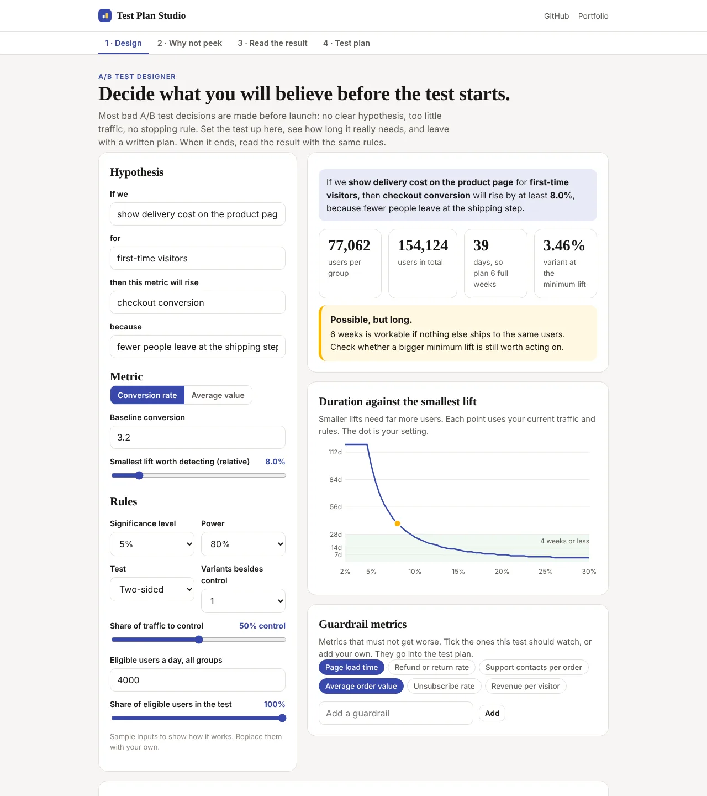

The problem
Teams launch tests without knowing if they have the traffic, then stop at the first green number. I wanted one tool that makes those mistakes visible before they happen.

What it does
- Sample size and duration for rates or averages, unequal splits and several variants.
- Duration curve against the minimum lift.
- Peeking simulator with up to 2,000 A/A tests.
- Result reader with confidence interval, sample ratio check and a plain verdict.
- Test plan as Markdown.
Findings and decisions
From the simulator, not real data
Checking daily multiplies false winners
With the sample inputs, 1,000 A/A tests gave 4.4% false winners when read once and 26.1% when stopped at the first significant day, about six times more.
What I would do next
- Sequential testing option.
- Variance reduction with pre-period data.
- Compare the plan with the result automatically.